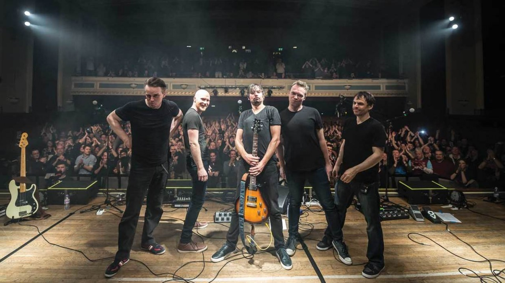

Informacje ze świata muzycznego:
Data wpisu: 25.11.2017
The Pineapple Thief – angielska grupa muzyczna grająca indie rock i rock neoprogresywny. Powstała w 1999 w Yeovil w hrabstwie Somerset w Anglii.

Nazwa Pineapple Thief pierwotnie firmowała solowe wizje muzyczne Bruce'a Soorda. W 1999 ukazał się debiutancki album Abducting the Unicorn, a w 2001 kolejny – 137. W odpowiedzi na pozytywne reakcje odbiorców Soord postanowił na stałe powiększyć skład i rozszerzyć działalność koncertową. Wiosną 2002 do Pineapple Thief dołączyli Jon Sykes (gitara basowa), Wayne Higgins (gitary), Matt O'Leary (instrumenty klawiszowe) i Keith Harrison (perkusja). O'Leary'ego zastąpił później Steve Kitch, zaś Higgins opuścił zespół. Grupa od początku współpracowała z wytwórnią Cyclops Records, zaś pod koniec 2007 podpisała kontrakt z KScope.